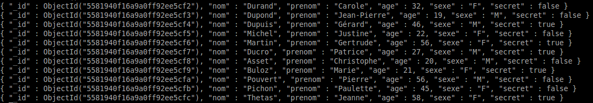

Nous allons "repeupler" la collection "fiches" de la base de données "maDB", mais, au lieu d'utiliser des "insert", nous allons importer nos données depuis un fichier texte au format JSON se trouvant ici
Après avoir téléchargé ce fichier (fi.json), ouvrez-le à l'aide d'un éditeur de texte.
Vous devriez avoir ceci
[{'nom': 'Durand','prenom': 'Carole','age':32,'sexe': 'F','secret':false},
{'nom': 'Dupond','prenom': 'Jean-Pierre','age':19,'sexe': 'M','secret':false},
{'nom': 'Dupuis','prenom': 'Gérard','age':46,'sexe': 'M','secret':true},
{'nom': 'Michel','prenom': 'Justine','age':22,'sexe': 'F','secret':false},
{'nom': 'Martin','prenom': 'Gertrude','age':56,'sexe': 'F','secret':true},
{'nom': 'Ducro','prenom': 'Patrice','age':27,'sexe': 'M','secret':true},
{'nom': 'Asset','prenom': 'Christophe','age':20,'sexe': 'M','secret':false},
{'nom': 'Buloz','prenom': 'Marie','age':21,'sexe': 'F','secret':true},
{'nom': 'Pouvert','prenom': 'Pierre','age':56,'sexe': 'M','secret':false},
{'nom': 'Pichon','prenom': 'Paulette','age':45,'sexe': 'F','secret':false},
{'nom': 'Thetas','prenom': 'Jeanne','age':58,'sexe': 'F','secret':true}]
Vous pouvez constater que nous avons un tableau contenant des documents JSON
Nous allons maintenant importer ces données dans mongoDB
Vous devez ouvrir un terminal (une console) : attention, je parle ici d'un terminal, pas de la console mongoDB.
Taper dans le terminal la commande suivante :
mongoimport -d maDB -c fiches --file fi.json --jsonArray
Attention à la position du fichier "fi.json" dans votre arborescence. Ici, le fichier "fi.json" se trouve dans le répertoire courant.
Pour savoir si tout s'est bien passé, ouvrez une console mongoDB, connectez-vous à la base de données "maDB" et faites un "find" pour la collection "fiches"
Vous devriez alors obtenir ceci :
Si tout est OK, nous allons pouvoir effectuer des requêtes sur ces données dans la prochaine activité